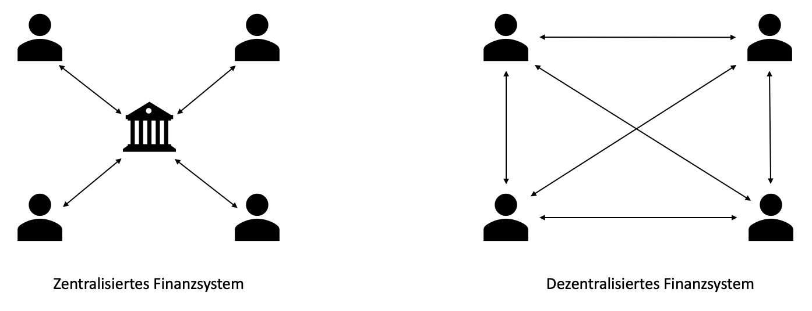

Kryptowährungen sind digitale Währungen. In den Grundzügen funktionieren sie wie herkömmliche Währungen, auch Fiat-Währungen genannt, wie Euro oder Dollar. Man kann sie tauschen und handeln und mit ihnen bezahlen. Ein wichtiger Unterschied ist jedoch, dass Kryptowährungen im Gegensatz zu den uns bekannten Fiat-Währungen dezentral sind. Das heißt, dass sie nicht von einer festen Stelle (wie zum Beispiel einer staatlichen Institution) kontrolliert wird. So ist die Nutzung vollkommen unabhängig von Banken, die unter Umständen die Kontrolle über Überweisungen haben können.
Die Dezentralisierung bei Kryptowährungen bietet neben der Unabhängigkeit von dritten Institutionen eine erhöhte Privatsphäre der Beteiligten und sorgt für vollkommene Kontrolle über Entscheidungen innerhalb der Community. Diese dezentralen Systeme laufen häufig über Blockchain-Mechanismen.
Es gibt zahlreiche verschiedene Kryptowährungen, die sich teilweise leicht bis stark voneinander unterscheiden. Unter anderem anhand dieser Unterschiede kann jeder Krypto-Nutzer für sich entscheiden, welche dieser zahlreichen Währungen für sich Ideal ist.